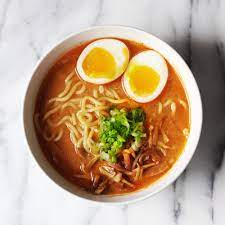
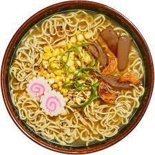
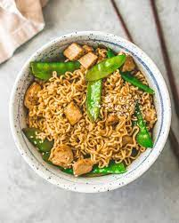

Ramon, garlic, brown sugar, soy Sause,butter,egg
Put the butter, garlic, brown sugar, soy Sause in a Sause pan and let simmer for 1min, cook Ramon as package says then take ramen out of the water and put in the Sause, save some of the ramen water. Put some pasta water in the Sause pan and add an egg.
The reason that I picked this food was that It is from tiktok and I have all ways wanted to make my ramen taste better and its cheap to make.
soy, wheat, eggs